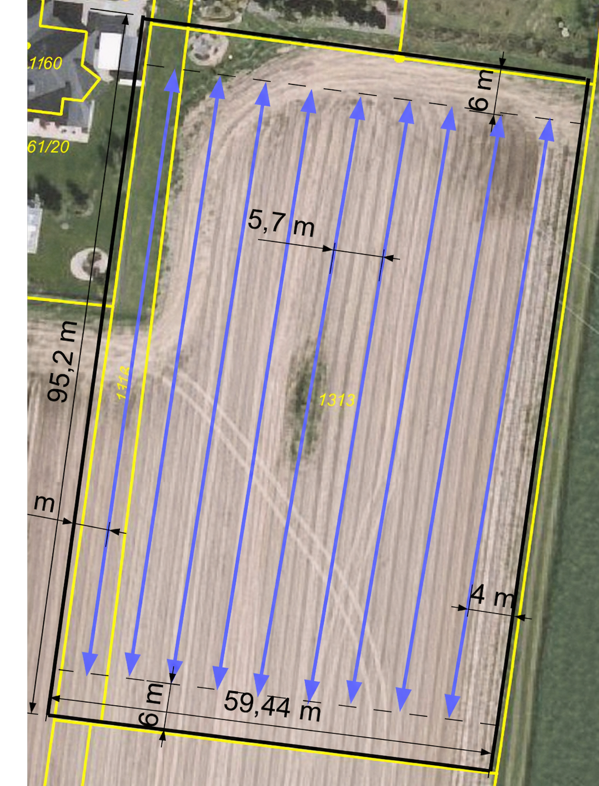
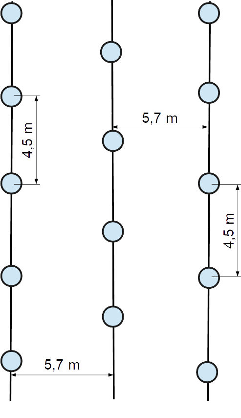
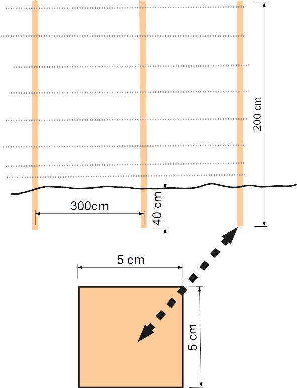
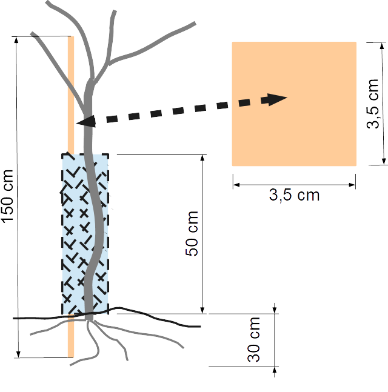

Projekt výsadby ovocného sadu
| Majitel: | Novotný Jiří Ing., Ovocná 52, Moravská Ostrava, 70201 Ostrava |
| Zpracovatel návrhu: | Ing. David Slavata, PhD., Tyršova 711/3, 74601 Opava, tel: 602 504 964 |
A. Zpráva
Ovocný sad bude vysázen v obci Ostrava, k.ú. Moravská Ostrava na parcele p.č. 1313 a 1314, dle výpisu z KN se jedná o ornou půdu, která je pravidelně obhospodařována. Moravská Ostrava se nachází v nadmořské výšce 255 až 275 metrů nad mořem. Obě parcely tvoří dohromady pozemek pravidelného obdélníkového tvaru (viz obr. č. 1). Pozemek je situován severojižním směrem. Celková výměra pozemků určená pro výsadbu sadu je 6 940 m².
BPEJ pozemků je 64300. Bonitovaná půdně ekologická jednotka spadá do šestého klimatického regionu, který zahrnuje Moravskou bránu, Ostravskou pánev, část Podbeskydské pahorkatiny a malou část frýdlantského výběžku. Jedná se o region mírně teplý a vlhký s průměrným úhrnem srážek 700 mm až 900 mm. Pravděpodobnost suchých období je v rozmezí 0–10 %. Hlavní půdní jednotka, genetický půdní představitel tvoří hnědozem luvická oglejená (HNlg´), luvizem oglejená (LUg). Jedná se o slabě kyselou půdu s rozsahem pH 5,6 až 6,5. Pozemek leží v rovině, všesměrná expozice.
Budoucí sad bude přístupný po východní straně polní cestou v délce cca 95 metrů. Další přístup je možný ze severozápadního rohu, kde se nachází severozápadní zatravněný a zpevněný pás. Sad bude oplocen dočasnou oplocenkou v délce 309,2 metrů. Jako pletivo bude použita standardní lesní oplocenka pozinkovaná. Jako opory k úchytu pletiva budou použity modřínové hranoly o straně 5 cm a délce 2 m. Hranoly budou zašpičatěné, zatlučené do hloubky cca 0,4 m. Viz obrázek č. 3.
Sad bude rozvržen tak, že z vnější strany prvního a posledního stromořadí bude vytvořen mezi stromořadím a plotem údržbový pás v šíři 4 metrů. Ze severní a jižní strany sadu bude vytvořen mezi konci jednotlivých stromořadí a plotem (hranicí pozemku) údržbový pás v šíři 6 metrů. V sadu se bude nacházet 9 stromořadí, která budou pravidelně vysázena ve vzdálenosti 5,7 metrů od sebe. V každé řadě bude vysázeno cca 18 ovocných stromků ve vzdálenosti 4,5 metru od sebe. Spon výsadby tedy bude 5,7 m × 4,5 m (viz obrázek č. 2). Celkově se v sadu bude nacházet 162 ovocných stromků.
Postup výsadby ovocných stromků:
Při výsadbě se nejprve vyhloubí jamky na velikost danou kořenovým systémem vysazovaných stromků. Kořeny se v jamce volně rozmístí, nesmějí být vlivem malých rozměrů zmáčknuty nebo zkrouceny. Šířka jamky postačí o rozměrech 0,4–0,5 m a hloubka 0,4 m. Po vyhloubení jamek se natlučou individuální opory a provede se prohnojení (NPK, Cererit). Následně se provádí samotná výsadba ovocných stromků. Nakonec se provede individuální oplocení umělohmotným pletivem.
Každý ovocný stromek bude chráněn individuální oporou s plastovou síťkou. Individuální opora bude tvořena modřínovým hranolem zkoseným o straně 3,5 cm. Hranoly budou zatlučeny tak, aby chránily stromek z jižní strany. Plastová ochranná síťka bude připnuta k hranolu do výšky cca 0,5 metru. Hranol bude zatlučen do země do hloubky 0,3 metru. Viz obrázek č. 4. Po provedené výsadbě nebo v průběhu výsadby musí být sestříhány větve.
Doporučený druh ovoce a odrůda, podnož:
Pozemek je vhodný k výsadbě slivoní. Vzhledem k charakteristice lokality je možné sadit i pozdní odrůdy odolné proti šarce (Jojo, Top End, Top Hit, Haganta, případně jiné). Je vhodné použít při výsadbě dvě až tři různé odrůdy. Jako podnož může být použit myrobalán nebo St. Julien.
Doba výsadby:
Výsadba bude provedena v podzimních měsících (konec října, listopad, začátek prosince) roku 2017 nebo v jarních měsících (březen, duben) 2018.
Následná údržba:
Bude prováděn pravidelný pokos s odklizením travní hmoty nebo mulčování s ponecháním travní hmoty na pozemku minimálně 2× do roka. První kosení bude prováděno do konce května, druhý pokos do konce srpna. Průběžně bude prováděna kontrola individuální ochrany stromků, budou odstraňovány plané obrosty, bude prováděn pravidelný střih vždy ke konci měsíce září daného roku.
B. Grafická dokumentace
Obr. 1: Celková situace a základní rozvržení výsadby sadu

Obr. č. 2: Detail řad stromků

Obr. č. 3: Detail stavby dočasné oplocenky kolem sadu

Obr. č. 4: Detail vysazení ovocného stromku, opory ke stromku a síťky proti okusu

C. Návrh rozpočtu – příklad
Ceny jsou smyšlené a slouží pouze jako ilustrace.
| Návrh rozpočtu - příklad | (ceny jsou smyšlené) |
|---|---|
| Materiál | |
| Stromky: 162 × 10 Kč | 1 620,- Kč |
| Hranoly, opora ke stromkům: 162 × 10 Kč | 1 620,- Kč |
| Hranoly plot: 103 × 35 Kč | 3 605,- Kč |
| Pletivo plot: 309 × 10 Kč | 3 090,- Kč |
| Síťky: 162 × 15 Kč | 2 430,- Kč |
| Značkovač | 200,- Kč |
| Sponky, sponkovač | 500,- Kč |
| Hnojivo NPK: 60 × 5 Kč | 810,- Kč |
| Doprava | |
| Doprava na místo | 2 500,- Kč |
| Malotraktor – popojíždění | 2 000,- Kč |
| Práce | |
| Stavění plotu | 5 400,- Kč |
| Vyměření, kopání, zatloukání kůlů, sázení, síťkování | 5 200,- Kč |
| Celkem | 28 975,- Kč |